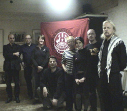

Submitted on Mon, 08/20/2007 - 3:28am
 By Diane Krauthamer
By Diane Krauthamer
Despite Starbucks’ international union-busting attempts, workers and their supporters are telling the company that they are not backing down. Increased organizing and support is growing like wildfire throughout Europe and the U.S., and this past weekend proved once again that the struggle is far from over.
On August 18, 2007, the Industrial Workers of the World (IWW) and No Sweat held a successful National Day of Action against Starbucks, with demonstrations in ten cities across the UK, including Glasgow, Leeds, Edinburgh, Leicester and London.
Although the company has more than 500 stores with over 5,000 workers and continues to expand in the UK, management is growing nervous as negative publicity surrounding their unfair labor practices increases regionally.
In London, small groups spent the morning distributing informational leaflets to baristas at both Starbucks and Caffé Nero, another major UK coffee chain with working conditions that parallel those of Starbucks. Starbucks baristas are paid just above the minimum wage and are subject to excessive working hours and unpaid overtime. Additionally, baristas must work at a relentless pace, resulting in repetitive strain injuries.
By 2 PM, the groups convened in front of the New Oxford Street Starbucks, a busy shopping district in the central city. More than 30 people spent the windy Saturday afternoon protesting and distributing information to customers, workers and onlookers. In addition to the dozens of protesters, undercover police officers and regional management also made a presence at the event. Two police officers were spotted across the street from the demo, illegally taking photos of individuals from the IWW and No Sweat.
One of the managers, wearing a beige sweater as a feeble attempt to conceal his company t-shirt, sat inside the store “reading a newspaper” while keeping the protest under surveillance. When I asked him if he was there to protest, he said he just wanted to make sure that nothing would “get out of hand.” He admitted that the company had already known about the protest beforehand, despite the fact that the protest location was only communicated over email, and not made public.
The manager asked if we were planning any other demonstrations, and when everyone packed up to go home, he followed the group down the street.
As Starbucks' headquarters in Seattle is advising regional management in the UK to embark on campaigns of surveillance and intimidation—as they have done in the U.S., France and Germany—workers are not backing down. Many baristas showed interest in joining the union, and many potential customers turned away from the store when they received information about the company’s practices. Continued harassment is evidence that the company who sets the world's coffee industry standard feels threatened by the power of radical unionizing and solidarity that continues to expand across international borders
Submitted on Fri, 08/17/2007 - 4:30am
Disclaimer - The opinions of the author do not necessarily match those of the IWW. The image pictured to the right did not appear in the original article, we have added it here to provide a visual perspective. This article is reposted in accordance to Fair Use guidelines.
 At the Labor Board trial of the company, twentysomething activists try to poke holes in the company's socially responsible image
At the Labor Board trial of the company, twentysomething activists try to poke holes in the company's socially responsible image
By Moira Herbst - Business Week, August 17, 2007
In a spare office-like courtroom in midtown Manhattan, former Starbucks (SBUX) barista and Bronx native Joe Agins Jr. sits on the witness stand with eyes wide open. Dressed in an oversized T-shirt and sporting a goatee, he looks younger than his 24 years. Several times, he asks the judge for time to calm his nerves and gain his composure. Agins is describing a day in 2006, after he'd become an outspoken member of the Industrial Workers of the World (IWW) union, when he was introduced to the company's New York metro regional vice-president, who asked him if he liked working at Starbucks. "I felt closed in and trapped by management, and like I was under pressure," he says.
Submitted on Tue, 08/14/2007 - 2:08pm
Disclaimer - The opinions of the author do not necessarily match those of the IWW. The union referred to in the article is the IWW. This article is reposted in accordance to Fair Use guidelines.

By George Raine, San Francisco Chronicle Staff Writer, August 4, 2007
The National Labor Relations Board has concluded that the owner of the Real Foods store in San Francisco's Noe Valley neighborhood committed a series of unfair labor practices in 2003 when the store was closed and 31 employees, who had begun discussing the possibility of forming a union, were fired.
Submitted on Tue, 08/14/2007 - 2:02pm
Starbucks exploits its workers and the farmers who grow the coffee beans it uses. Worldwide it has over 12,000 stores and employs over 100,000 people. In Britain , it has over 500 stores employing 5,000 workers.
STARBUCKS COFFEE: BAD FOR WORKERS, BAD FOR FARMERS, BAD FOR YOU!
Starbucks exploits its workers and the farmers who grow the coffee beans it uses. Worldwide it has over 12,000 stores and employs over 100,000 people. In Britain , it has over 500 stores employing 5,000 workers.
Starbucks baristas in the UK are barely paid above the minimum wage and are subject to excessive working hours, unpaid overtime; work at a relentless pace, resulting in repetitive strain injuries for many workers. In the US , Starbucks has waged an illegal union-busting campaign resulting in firing of six baristas in New York City .
Coffee growers receive little more than 0.50p for a pound of coffee, which is then sold for £80.
Oxfam launched a campaign against Starbucks in October 2006 after it effectively blocked Ethiopia 's attempts to trademark its coffee beans in the United States .
The tide is turning against Starbucks. In the UK the Industrial Workers of the World (IWW) is organising the Baristas United Union in several organising campaigns at Starbucks; in the US the IWW-Starbucks Workers Union is expanding across the country; in NZ hundreds of casual fast food workers, including Starbucks baristas organised into the UNITE union; workers are getting organised in France and Germany too.
18 August is a national day of action against Starbucks. The IWW, No Sweat and many organisations and supporters are holding protests in cities right around the UK . We are asking the public not to drink at Starbucks today and to show support for the workers and farmers trying to improve their lives and make a living wage.
Contact us to get involved in the campaign:
Industrial Workers of the World – UK
rocsec@iww.org.uk
http://www.iww.org.uk
http://www.baristasunited.org.uk/
PO Box 1158 Newcastle upon Tyne
NE99 4XL
No Sweat
admin@nosweat.org.uk
http://www.nosweat.org.uk
PO Box 36707 London SW9 8YA
http://www.starbucksunion.org/node/1852
Submitted on Mon, 08/06/2007 - 2:57am
 By DANIEL GROSS - Counterpunch, August 4 / 5, 2007
By DANIEL GROSS - Counterpunch, August 4 / 5, 2007
A multi-billion dollar corporation facing extensive allegations of illegal and relentless union-busting. Eight outspoken union employees fired on pretexts ranging from the absurd to the offensive. Human and video surveillance tracking the every move of union members or those suspected of union sympathies. Non-stop anti-union propaganda. Threats, bribes, interrogations, and discriminatory disciplinary actions.
Workers complaining about a wage leaving them in poverty and fluctuating work schedules interfering with family obligations. Employees relying on Medicaid for health care or just doing without insurance. Workers afflicted by repetitive stress injuries driven by understaffing and ergonomic neglect.
In some ways, you wish the multinational corporation described was Wal-Mart. At least with Wal-Mart, you know what you’re dealing with. A cold heartless corporation running roughshod over the workers it employs and the communities in which it operates. Wal-Mart succeeded in squeezing more profits out of its employees and suppliers than anyone else but it failed in creating a socially responsible brand.
Those who believed corporate social responsibility (CSR) represented an important and positive change within capitalism will be disappointed that the corporation described is Starbucks. Because Starbucks, unlike Wal-Mart, has succeeded in the social responsibility game. In fact, no corporation plays the game better than Starbucks.